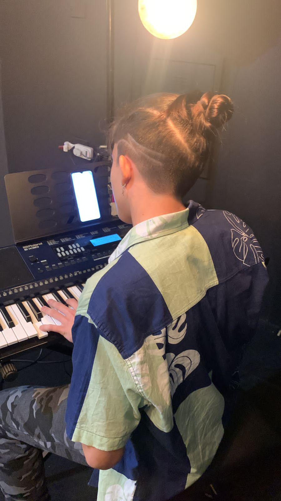

Oi, tudo bem ? Meu nome é Daniel Lozano, estudo no Alcina Dantas Feijão desde que entrei no
ensino médio. Minha atividade favorito é tocar teclado, me divirto também tocando violão,
gosto muito de ouvir musicas, amo jogar futebol e
fica mais legal com os amigos, e me divirto também passeando com a família, alias quem não gosta ?
Hard Skills
Programador(iniciante)
Eu estou no ultimo ano de conclusão do de tecnologia no Alcina Dantas Feijão, onde se aprende a programar: html,css e javasript.

Música
Toco teclado e violão, sei teoria musical, campo harmonico ritimica e muito mais.
Contrução de Projetos
No curso de T.I do Alcina Dantas Feijão aprendi a construção de projetos, o cronograma, diagrama de caso de uso e de classe, kan-ban e a lista scrumm.
Soft Skills
Paciência
Tenho muita paciencia com as pessoas e em situações de estres não irei explodir facilmente
Esforço
Sou uma pessoa bastante esforçada e não desisto facilmente, ao contrario,
irei tentar varias vezes até conseguir.
Observação
Sou uma pessoa que observa e analisa muito o ambiente e tudo que se encontra nele.
Interesses Profissionais
Curto Prazo
1 a 2 anos: pretendo trabalhar com a area de tecnologia(construção de sites).
Médio Prazo
8 a 10 anos: pretendo trabalhar em uma grande empressa da area de tecnologia e informação ou bigtech.
Longo Prazo
15 anos: Trabalhar com a inteligencia artificial para criar Sistemas Complexos.
 EME Prof Alcina Dantas Feijão
EME Prof Alcina Dantas Feijão